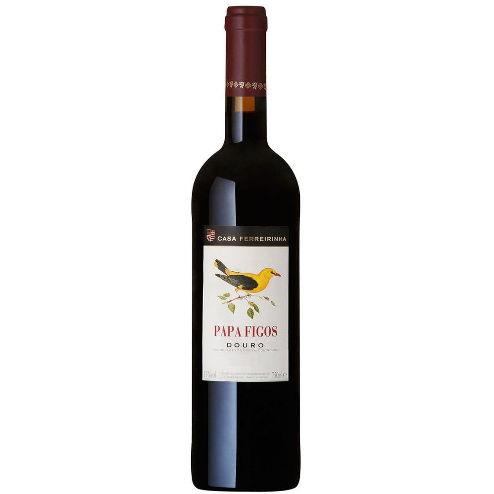

€7 - €8

TINTO · DOURO
Papa Figos Douro Vinho Tinto
Rabigato
Viosinho
Arinto
Códega
Moscatel
Gosto suave na boca, encorpado, com acidez na medida e final limpo e muito harmonioco, que pede mais um copo.